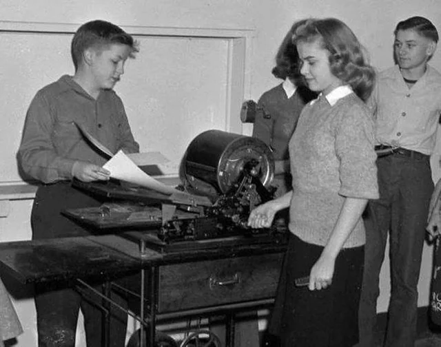

Mimeógrafo
Máquina para fazer diversas cópias em papel de um mesmo material
Cinescópio
Dispositivo de exibição de filmes antigos, projetado para filmes a serem vistos por uma pessoa de cada vez através de uma janela de visualização